Sovereign Intelligence Brief · Deep Dive · Layer 1 of 4 Layers
Syed Mokhtar's Bank and the Islamic Mega-Bank Question
Bank Muamalat Malaysia, the eighteen-year pare-down, and the arithmetic behind
the "largest Islamic bank" rumour — what is verifiable, what is implied, what is absent.
The one-paragraph version
Syed Mokhtar Albukhary owns one licensed bank in Malaysia, and he owns it through a
debt-laden listed conglomerate whose market capitalisation (RM1.87bn) is smaller than the value of the bank stake
itself. Bank Negara Malaysia told DRB-HICOM in 2008 to cut its 70% holding to 40%; eighteen years and ten
attempts later, the holding is still 70%. Every rumoured partner — Al Baraka, Affin, BIMB, CIMB/RHB, MBSB,
Sarawak — has either walked or been walked away from. A merger of MBSB Bank and Bank Muamalat today would
create Malaysia's largest standalone Islamic bank by RM3.4bn of assets, or roughly 3% — a label worth
political capital, not economic capital. The constraint has never been execution. It is price and control,
and nothing in the 2026 record changes either.
18 yrs
Since BNM's pare-down condition (2008), still unmet
10
Separate merger / stake-sale attempts on record
1
Transaction that actually closed (MBSB–MIDF, 2023)
32.1%
Bank Muamalat's share of DRB-HICOM's 1H26 pre-tax profit
Prepared: 15 September 2026 (UTC) · Classification: F13 sovereign intelligence product — internal, forwardable within the federation · Entity scope: Bank Muamalat Malaysia Bhd, DRB-HICOM Bhd, MBSB Bhd / MBSB Bank Bhd, Bank Islam Malaysia Bhd, Affin Bank Bhd / Affin Islamic Bank Bhd, Khazanah Nasional Bhd, EPF, Sarawak State Financial Secretary
Produced by: i-ARIF (Hermes edge bridge) — computational output under F13 sovereign direction. Not a human analyst opinion; not a certified research report.
Integrity: every numerical claim is sourced or derived and tagged OBSDERINTSPECVOID. No investment recommendation, price target or rating is given or implied. This brief contains no position, no solicitation and no forward-looking financial advice.
The Executive Read
Ten findings, ordered by how much they should change your read of the rumour.
The premise needs a correction first. Syed Mokhtar does not own "banks" plural in Malaysia.
He owns one licensed bank — Bank Muamalat, through DRB-HICOM (70%), which he controls with 55.92% via Etika
Strategi. OBS Any merger story is therefore not "consolidating his banks"; it is
"finding a partner for the one bank he cannot legally keep whole".
The "largest Islamic bank" claim is technically available and economically hollow.
MBSB Bank (RM64.4bn) + Bank Muamalat (RM45.7bn) = RM110.1bn, versus Bank Islam's RM106.7bn — first place by
RM3.4bn, or 3%. DER Meanwhile Maybank Islamic alone holds RM390bn, about 30% of
Malaysia's Islamic banking assets. OBS
Bank Muamalat is not a distressed asset — which is precisely why it never gets sold.
MARC affirmed A+/MARC-1/Stable in August 2026 with LCR 160.3% and NSFR 108.3%. OBS
There is no forced-seller clock anywhere in its numbers.
What has gone wrong is the growth and asset-quality story. Financing growth collapsed from
14.1% (2024) to 4.6% (2025) against a 7.9% sector average, and the gross impaired financing ratio rose to 1.43%
(2025) and 1.52% (1Q26), exceeding the industry for the first time in recent years, driven by ~RM100m of retail
accounts routed to AKPK after the early-2025 multi-bank fraud incident. OBS
The real strategic driver is funding, not size. Bank Muamalat's retail funding is 12% of
deposits plus investment accounts, with a 47% top-20 depositor concentration and 90.2% deposit funding.
OBS A retail-deposit-rich partner fixes that; a bigger balance sheet does not.
This is the most defensible merger thesis available — and it is not the one anybody is telling.
The pare-down stalls on an arithmetic contradiction. Bank Muamalat delivered RM109.4m of
pre-tax profit in 1H26 — 32.1% of DRB-HICOM's RM340.5m. DER DRB-HICOM's entire market
capitalisation is RM1.87bn (97 sen, Aug 2026), while its 70% Bank Muamalat stake is worth an estimated
RM1.9–2.7bn at 0.85x–1.20x book. DER Sell it and you crystallise value while
removing a third of the group's profit — in the same year the group's net profit already fell 47.4% in 2Q.
Both likely partners are impaired this year. MBSB's 2Q26 net profit halved to RM44.2m and it
cut FY26 ROE guidance from 5–6% to 2–3%. OBS Weak acquirers pay low prices; the seller
anchors high. That is the same deadlock that killed talks in 2016, and it has not moved.
The record is 0-for-10 on completion. Since 2008: Al Baraka (2010), Affin (2012-13), BIMB
(2013), CIMB-RHB-MBSB (2014-15), MBSB–Muamalat (2015-16, 2017, 2019-20), a 2024 IPO exploration, and the
2025 Sarawak look — all aborted or not pursued. The one closed deal in this lineage is MBSB–MIDF (2023), and it
involved a different seller. OBS
I could not verify any fresh 2026 merger negotiation in the public record. No Bursa
announcement, no BNM approval notice, no adviser mandate, no 2026 news report of revived talks.
VOID The rumour is standing chatter built on a real, unresolved regulatory
obligation — not on a live transaction. That distinction should govern how much weight you give it.
What actually changes the picture. Not sentiment — filings. Watch DRB-HICOM and MBSB Bursa
announcements, any Khazanah stake transfer, adviser appointments, BNM extension applications, and the Sarawak
state budget. Any one of those is a hard signal; the rest is noise. The full trigger list is in §10.
Base case (12 months): status quo — 70% intact, no transaction, the pare-down condition simply
continuing to age. Assigned 50%. A completed MBSB Bank–Bank Muamalat merger: 18%. A partial sell-down to a
strategic minority holder: 15%. Sarawak / Affin absorbing Bank Muamalat: 9%. IPO: 5%. Orderly three-way: 3%.
INT Rationale in §7.
§0 Scope, Method and Epistemic Discipline
What this brief is
A four-layer institutional read — tersurat (what is on the record),
tersirat (what the record implies), quantum (the trajectory space), and
void (what is absent) — applied to the question: is a Bank Muamalat consolidation real,
what would it create, and why has it never happened?
What this brief is not
Not investment advice. No rating, target price, buy/hold/sell, or recommendation on DRB-HICOM, MBSB,
BIMB, Affin or any other counter.
Not a claim of inside information. Everything here is from public filings, regulator pages, rating-agency
releases, exchange announcements and press reporting.
Not intent attribution. Where the record suggests a pattern, it is described as a pattern of outcomes,
not of motives. INT
Method
Primary anchors: Bank Muamalat Pillar 3 (1H 30 Jun 2026), MARC Ratings affirmation (18 Aug 2026),
DRB-HICOM 1Q/2Q 2026 filings and media releases, MBSB 2Q26 results, Bank Islam 2Q26 results,
Affin Bank / Affin Islamic 1Q-2Q26 reports, BNM licence pages, Fitch (Feb 2026), Bernama (Jan 2026).
Secondary anchors: The Edge Malaysia (2010-2026), The Star, NST, Free Malaysia Today, Asian Banking
& Finance, Reuters, Bursa announcements, research notes (Kenanga, Public Invest, HLIB).
Void layer: 40+ term vocabulary sweep against the 2024-2026 published record across eight categories.
Sweep performed 15 September 2026 across multiple search lanes, including recency-filtered passes for
the last 30 days and the last 12 months on the specific question of revived talks.
Disclosures (F7 Humility)
Prepared by a non-banking analyst with no position in, employment by, or advisory relationship
with any entity named. The principal's professional background is upstream geoscience, which creates a bias
toward reading institutions structurally; that bias is acknowledged, not corrected for. Where a number could
not be verified it is marked as such rather than estimated silently.
§1 Tersurat — What Is Verifiably True
1.1 The ownership chain
Layer
Holding
Note
Syed Mokhtar Albukhary → DRB-HICOM
55.92%
Via Etika Strategi Sdn Bhd; Forbes ranks him Malaysia's 10th richest, est. US$3.5bn (Sep 2026). OBS
DRB-HICOM → Bank Muamalat
70%
Bought from Bukhary Capital (also Syed Mokhtar-controlled) in November 2008; reported consideration RM1.069bn / RM1.01bn in different accounts — the discrepancy is in The Edge's own reporting and is flagged, not resolved. OBS
Khazanah Nasional → Bank Muamalat
30%
Considered non-core; has been a willing seller since at least 2015-16. OBS
Syed Mokhtar's effective economic interest in Bank Muamalat
≈39.1%
55.92% × 70%. DER
Other banking licences owned by Syed Mokhtar in Malaysia
None
His listed footprint is ports, power, rice, postal, media, automotive, defence and property. Bank Muamalat is the only licensed bank. OBS
On the wording of the rumour. "Syed Mokhtar's banks" implies a portfolio. There isn't one.
The plural in the market chatter comes from the wish — the idea of two Islamic banks combining into a
national champion — not from the balance sheet. Any analysis built on "he is consolidating his banks" starts
from a false premise and will over-read every subsequent signal. INT
1.2 The obligation that started everything
When BNM approved DRB-HICOM's purchase of 70% of Bank Muamalat in 2008, it attached a condition: pare the
holding down to 40%. OBS The Edge has reported that condition consistently from 2015
through 2025, including a February 2016 extension described as final. It remains unmet in September 2026 — eighteen
years. OBS
Two things the record does not establish, and this brief will not pretend otherwise. (a) The 40% figure is repeatedly reported but no BNM public document restating it was located in this sweep.
VOID (b) The legal architecture matters: the Financial Services Act 2013 does not set a shareholding cap for
institutions; the 10% cap applies to individuals, with grandfathering for pre-2013 holdings.
So the constraint here is a condition of a specific 2008 approval, not a standing statutory rule — which is why
it can be extended, waived, or renegotiated politically. That is an important degree of freedom, and it is
routinely misdescribed in commentary. OBS
1.3 Bank Muamalat on the numbers
Metric
Latest
Context
Total assets
RM45.7bn (Dec 2025)
3rd-largest standalone Islamic bank. Was RM31.5bn at FY2022 and RM39.4bn in Mar 2024. OBS
Gross financing growth
4.6% (2025)
vs 14.1% in 2024; Islamic sector average 7.9%; banking system 4.8%. OBS
Gross impaired financing
1.52% (1Q26)
1.43% at end-2025, 1.05% at end-2024. Exceeded the industry average for the first time in recent years. OBS
Pre-tax profit
RM109.4m (1H26); RM307.1m (FY2025)
FY2025 rebound was helped by a RM75.7m reduction in provisions after 2024's elevated charge on a large legacy account. OBS
CET1 / Total capital
12.02% / 17.87% (Jun 2026)
Down from 12.27% / 18.13% at Dec 2025. OBS
Funding
90.2% deposits
CASA 31.3% (above industry); retail only 12% of deposits + investment accounts; top-20 depositors 47%. OBS
Liquidity
LCR 160.3%, NSFR 108.3%
Well above requirements. OBS
Ratings
MARC A+/MARC-1/Stable (Aug 2026); RAM A2/Stable/P1
Affirmed, not downgraded. OBS
Shareholders' equity
≈RM3.23bn (Jun 2026)
Share capital RM1.195bn + retained profits RM2.02bn + reserves, net of regulatory adjustments. DER
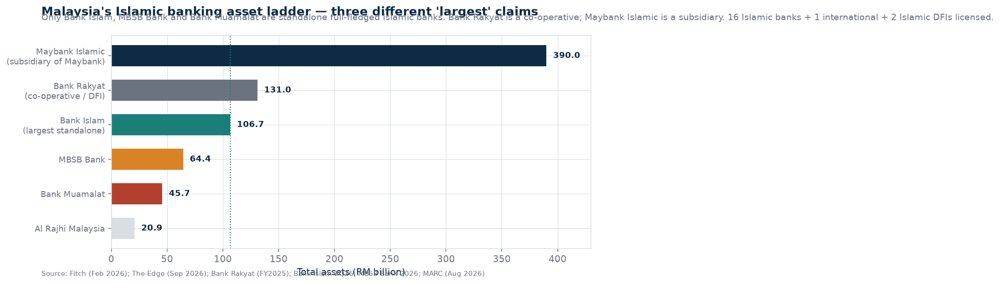
§2 The Arithmetic of "Largest" — Where the Claim Holds and Where It Breaks
The rumour's headline is that a merger would create the country's largest Islamic bank. Whether that is true
depends entirely on which lane you are scoring in, and the lanes are not interchangeable.
Claim
Verdict
Reasoning
"Largest Islamic bank in Malaysia"
False
Maybank Islamic holds ≈RM390bn — roughly 30% of Malaysia's Islamic banking assets, and more than 3.5x the proposed combination. OBS
"Largest standalone Islamic bank"
True, narrowly
MBSB Bank RM64.4bn + Bank Muamalat RM45.7bn = RM110.1bn vs Bank Islam RM106.7bn. A 3% lead. DER
"Largest Islamic financial institution"
False
Bank Rakyat holds RM131.0bn (end-2025). It is a co-operative under a different statute, which is why it is usually excluded — but the exclusion is a definitional choice, not a fact of nature. OBS
"A national champion to rival regional Islamic banks"
Unsupported
At RM110bn the merged entity would rank behind Bank Islam's parent-class peers regionally and well outside the global top ten by assets. INT
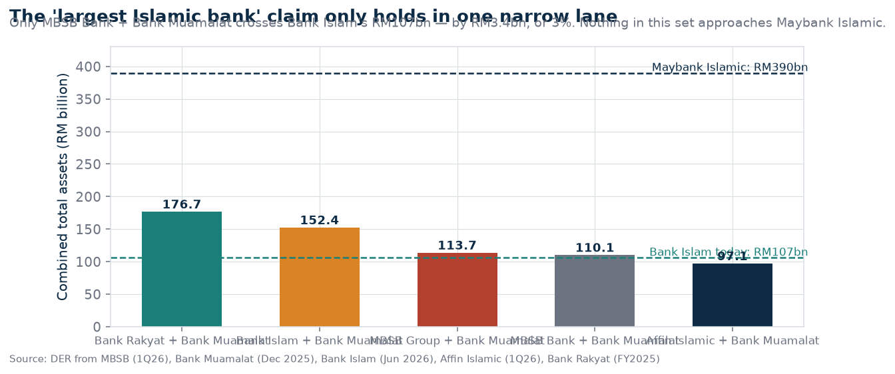
The scoping point is the substance. The label "largest standalone Islamic bank" is achievable
with one specific partner and not with any other. That is a narrative asset — useful for a shareholder
story, a political announcement, or a listing prospectus. It is not an economic asset: at RM110bn the combined
bank would still have the same funding structure problems, the same margin compression, and a third of the
profit base coming from a book that just printed a 1.52% impairment ratio. Names change. Unit economics do not.
INT
§3 Bank Muamalat: The Asset Itself
Any consolidation story lives or dies on the quality of the thing being consolidated. Bank Muamalat's numbers
tell two stories at once: a franchise that is fundamentally sound, and a growth engine that stalled within the
last eighteen months.
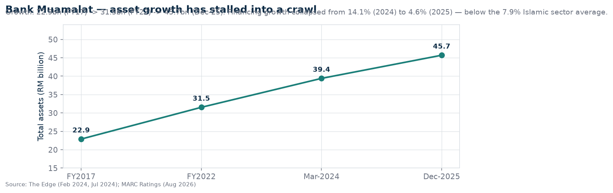
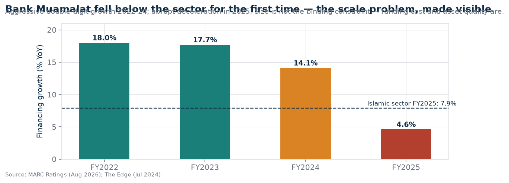
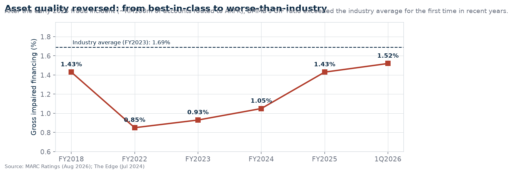
3.1 Reading the asset-quality turn honestly
The deterioration is specific and identifiable, which makes it more benign than a general book-quality failure.
MARC attributes the rise in impaired financing mainly to retail exposures, including roughly RM100m of accounts
placed under AKPK following a fraud-related incident in early 2025 that hit multiple banks. OBS
That is a single-event shock feeding through a retail book, not a structural credit breakdown — and the FY2025
profit rebounded to RM307.1m precisely because the prior year's provisions were released by RM75.7m.
OBS
But the burden of proof shifts. A bank at 1.52% and rising has to demonstrate two consecutive clean quarters
before a buyer can underwrite the book at book value. That is the practical consequence, and it lands
squarely in the middle of a negotiation that was already stuck on price. INT
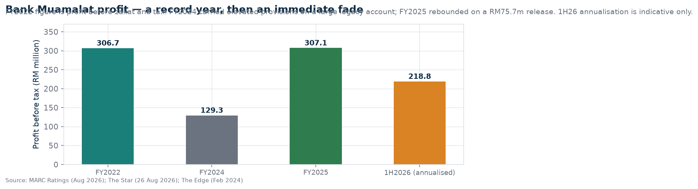
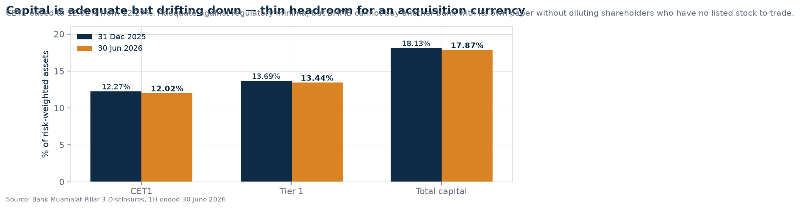
3.2 The funding structure is the real story
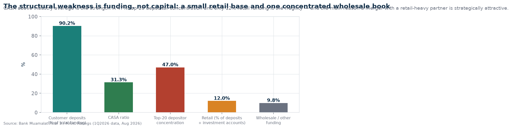
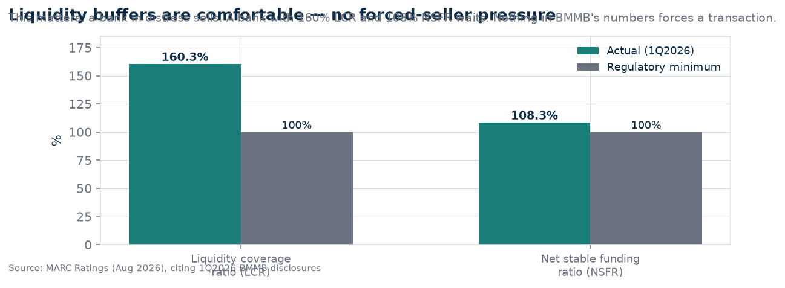
This is the thesis nobody is telling. Bank Muamalat is not short of capital or liquidity. It is
short of cheap, sticky, granular retail deposits: 12% of deposits plus investment accounts, against a 47%
concentration in twenty depositors. That is a cost-of-funds problem that compounds every year as competition
for retail deposits intensifies. The economically coherent partner is therefore a bank with a deep retail deposit
base and a low cost of funds — MBSB Bank qualifies on retail reach, and its own 1.5% quarterly ROE says it is not
winning on economics either. Two structurally weak franchises proposing to solve each other's problem is a
legitimate industrial logic. It is also the hardest kind of deal to price. INT
§4 The Buyer Side — Who Is Actually Available in 2026
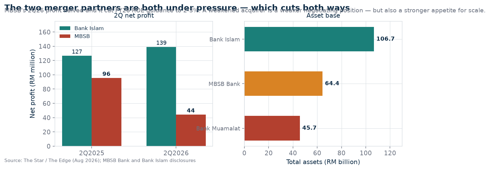
Candidate
Status
Assessment
MBSB Bank (EPF 65% of MBSB)
Willing, weakened
The only partner with a fully compatible Islamic banking licence and a retail deposit base. 2Q26 net profit RM44.2m (‑53.7% YoY), FY26 ROE guidance cut to 2–3%, NIM guidance cut to 1.6%. EPF control is non-negotiable for MBSB; DRB-HICOM wanted control in 2015-16 and 2019-20. Same collision. OBS
Bank Islam (BIMB)
Unlikely
Already the largest standalone Islamic bank at RM106.7bn. A merger here would create genuine scale (RM152bn) but would face competition-concentration scrutiny and dilutes an existing turnaround agenda (core banking replacement, six strategic priorities). INT
Sarawak / Affin group
Interested in principle, not in this asset
Sarawak took 31.25% of Affin and completed its takeover mid-2026; Affin Islamic holds RM51.4bn. The Edge reported in April 2025 that Sarawak looked at Bank Muamalat and concluded Islamic banking was "not quite its cup of tea" — a preference, not a prohibition. OBS
Al Rajhi Malaysia
Out of M&A mode
CEO Syahrul Ishak states explicitly: "At this moment, our focus is on growing organically," adding it would evaluate a good opportunity. RM20.9bn of assets — too small to be the answer. OBS
Kuwait Finance House Malaysia
Exiting
Winding down since 2024; bulk of the non-performing retail portfolio sold in April 2026; MARCWatch Developing maintained (6 Sep 2026); wind-down targeted for completion around 1Q26. This is a seller, not a buyer, and it removes the last Gulf bidder of scale. OBS
Gulf / other foreign strategic
Retreating
The Middle East retreat is the defining feature of the 2024-26 landscape. The likely foreign entrants of the 2010s are leaving. INT
Public market (IPO)
Textbook solution, weak market
An IPO is the only route that satisfies a partial pare-down while preserving DRB-HICOM's control — which suits the seller's revealed preferences. Its blocker is valuation: Malaysian banking stocks trade around 0.5–1.3x book, with Public Bank the outlier at 1.6x. OBS
§5 Tersirat — The Contradiction That Keeps This Deal Dead
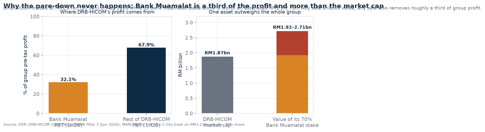
5.1 The dependency loop
In 1H26, DRB-HICOM's group pre-tax profit was RM340.5m (RM192.40m in 1Q + RM148.12m in 2Q) while Bank Muamalat
contributed RM109.4m — 32.1% of the total. DER In the same half, DRB-HICOM's net profit
was RM75.56m and its 2Q net profit fell 47.4% year-on-year on a tax swing. OBS
The group's shares closed at 97 sen in August 2026, a market capitalisation of RM1.87bn, having fallen 7.6% year
to date, against HLIB's sum-of-parts valuation of RM1.64 per share. OBS
Put the two together. The bank is a third of profit and, on any precedent multiple, worth more than the entire
listed parent. Every incentive in the structure argues for keeping control of it and unlocking it some other way.
This is not speculation about motivation — it is the observable shape of eighteen years of outcomes.
INT
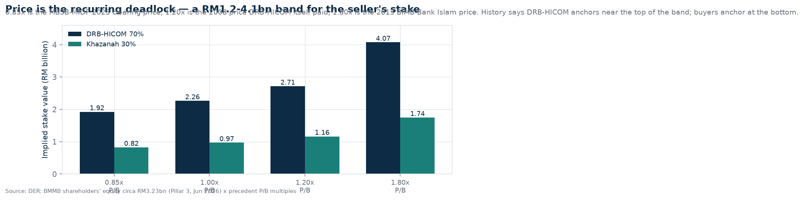
5.2 Price: the same wall, ten years on
The 2016 post-mortem was blunt: talks collapsed because DRB-HICOM expected an "unreasonably high" valuation and
wanted at least equal control with EPF. OBS Nothing in the ten years since has
widened the overlap between buyer and seller. If anything it has narrowed: INT
The buyer's currency weakened — MBSB trades at 61 sen with a RM5.02bn market cap and 1.5% quarterly ROE, so its paper is expensive to issue and its cash capacity is limited. OBS
The seller's stake is worth more than the seller's whole market cap, meaning a sale would be visible, dilutive to earnings, and politically read as an exit from banking. DER
The independent benchmark is now public and unfavourable: MBSB paid 0.85x book for MIDF in 2023. A seller anchored above 1x has to argue why Bank Muamalat is worth more than MIDF was. OBS
5.3 The shareholder motive matrix
Party
What they need
What they will not accept
Consequence
DRB-HICOM / Syed Mokhtar
A price above book, retention of control or at minimum equal control, and preserved group earnings
Losing control of a third of group profit at a discount
Anchors high, walks away — the 2016 pattern
Khazanah
Exit from a non-core 30%
Being the party that crystallises a low price
Has been willing to sell "post-merger" since 2015-16; still holds
EPF / MBSB
Control of the merged Islamic entity and DEPOSIT-SIDE scale
Being a minority in an entity controlled by a conglomerate
Control is a red line, not a negotiating position
BNM
Compliance with the 2008 condition, financial stability, sensible concentration
Nothing visible — extensions have been granted repeatedly
The regulator is not the binding constraint; the parties are
Sarawak
A larger banking platform it can influence
An Islamic-heavy asset that duplicates instead of complements Affin
Watching; not bidding, on the 2025 evidence
All rows INT — assembled from stated positions and observed outcomes, not from private
knowledge of anyone's intentions.
§6 The Precedent Ledger — Eighteen Years of Almosts
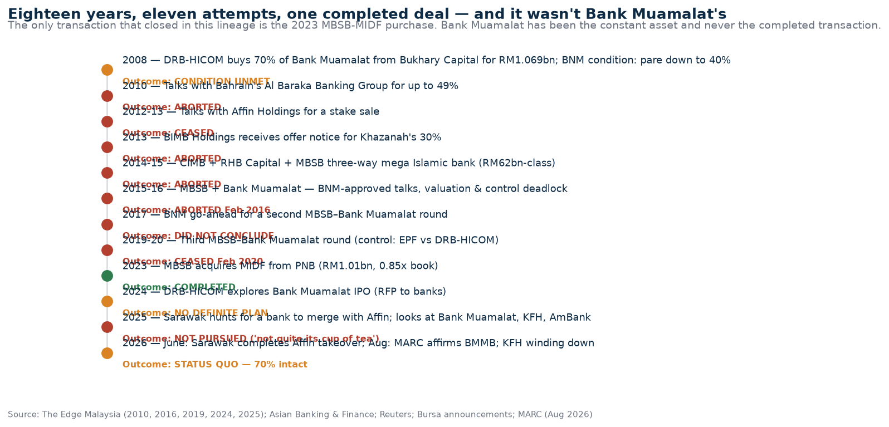
Read the ledger as a base rate rather than a story. Ten attempts, nine failures, one completion — and the
completion was MBSB buying MIDF from PNB, an entirely different asset with a motivated GLC seller, a 0.85x
clearing price and no control dispute. OBS Every attempt that involved Bank Muamalat
failed on the same two variables: price and control. INT
6.1 What is genuinely different in 2026
The Middle East has left. KFH is winding down; Al Rajhi has six branches where it once had 22 and says it is growing organically. The foreign strategic bidder pool thinned materially. OBS
Sarawak is now a real bank owner. A 31.25% stake in Affin and a completed takeover change the set of possible domestic actors — even if the state passed on this particular asset in 2025. OBS
The sector is structurally consolidating at scale. Islamic banking grew to RM1.3tn in assets (34.3% of banking assets as at January 2026) and Islamic financing is now about 44% of system loans, against a 50% national target. OBS
BNM's mega-bank licence concept still sets the bar at USD1bn issued and paid-up capital for a new standalone Islamic bank licence — a reminder that the regulator's preference has historically been for fewer, better-capitalised Islamic institutions. OBS
6.2 What is not different at all
The seller is the same. The asset is the same. The buyer's control demand is the same. INT
The valuation reference points have if anything moved against a high price — banking P/B multiples cluster between 0.5x and 1.3x. OBS
Bank Muamalat's own 2026 momentum is weaker than in 2024, which is when the last serious exploration happened. OBS
The honest asymmetry: consolidation logic in Malaysian Islamic banking is real and the direction
of travel is one-way — toward fewer, bigger Islamic banks. That does not mean this consolidation is
near. Sector-level inevitability and transaction-level probability are different variables, and the market
chatter habitually fuses them. INT
§7 Quantum — Scenario Space and What Collapses It
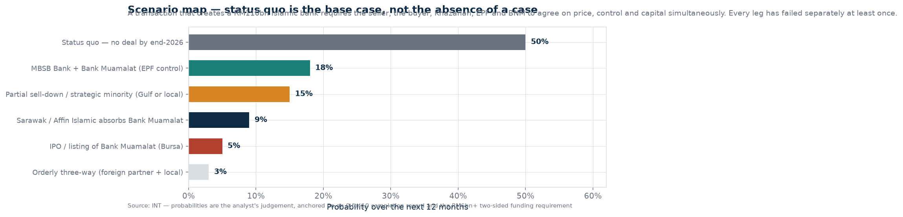
Scenario
Prob.
What has to be true, and what it produces
S1 · Status quo
50%
The default. The 2008 condition ages another year; DRB-HICOM keeps 70%; Bank Muamalat continues standalone scaling (Atlas digital platform, Kuala Selangor branch, product launches). BNM grants further extension or simply does not enforce. Low drama, high likelihood. INT
S2 · MBSB Bank + Bank Muamalat
18%
Requires EPF to accept control terms and DRB-HICOM to accept a price near 0.85–1.0x book while ceding control. Produces RM110.1bn — the "largest standalone" headline. Capital for integration would likely need a GLC-side injection, which reintroduces political timing risk. DER
S3 · Partial sell-down / strategic minority
15%
The least-discussed and most structurally compatible path: DRB-HICOM sells 20-30% to a strategic or institutional holder at a negotiated price, satisfies part of the condition while keeping control. No control dispute, no merger integration. Blocked mainly by the absence of a buyer willing to be a minority in a Syed Mokhtar vehicle. INT
S4 · Sarawak / Affin Islamic absorbs Bank Muamalat
9%
Would create a RM97.1bn Islamic franchise — second, not first. Requires Sarawak to reverse its 2025 position and to accept a large Islamic book beside a conventional group in which Bank of East Asia holds 23.93% and LTAT 22%. DER
S5 · IPO of Bank Muamalat
5%
The elegant solution: DRB-HICOM sells into the market, keeps control, no partner needed. Blocked by the same valuation problem that made the 2024 exploration go quiet — a listing at 1x book would raise roughly RM1.0–1.2bn for the shares sold, which is meaningful against a RM1.87bn parent market cap, but banking multiples are unhelpful. DER
S6 · Orderly three-way
3%
A foreign partner plus a domestic retail bank, structured to satisfy control for two parties — historically the structure that failed twice. Included for completeness. SPEC
7.1 Entanglement matrix — the variables that look independent and are not
Pair
Why they are entangled
Valuation ↔ Khazanah's exit
Khazanah sells post-merger to avoid crystallising a low price. If the merger dies, Khazanah's 30% stays parked. A "partial sell-down" scenario therefore also unblocks Khazanah — which may be the real prize and rarely the framing.
Control ↔ DRB-HICOM's earnings
Group net profit is thin (RM75.56m in 1H26). Deconsolidating Bank Muamalat removes roughly a third of profit. Any structure that takes DRB-HICOM below control damages the listed parent's earnings story at the exact moment its shares are 40% below sum-of-parts.
Capital ↔ political timing
Both candidate partners need capital. Capital of that size in Malaysian banking comes from GLC balance sheets. That ties any deal to budget cycles, election cycles and federal-state relations (Sarawak), not to banker logic.
Asset quality ↔ price
The 1.52% impairment ratio and the AKPK cohort are still developing. A buyer's due diligence will price the uncertainty; the seller will price the franchise. Divergent models of the same number.
MMC port listing ↔ DRB-HICOM's leverage
The MMC port IPO (potentially RM8.5bn, targeting a US$10bn valuation) was stood down in August 2026. That removes the most obvious source of group-level deleveraging, which in turn reduces DRB-HICOM's flexibility on any banking stake transaction.
7.2 Collapse triggers — the events that would move probabilities hard
Toward a deal
Bursa announcement of BNM approval to commence negotiations (the 2015 and 2017 pattern).
Appointment of transaction advisers / RFP reported.
Any Khazanah stake transfer or sale agreement.
A DRB-HICOM statement of "exploratory discussions" with a named counterparty.
Sarawak state budget or SFS disclosure of a banking acquisition mandate.
MBSB raising capital or issuing shares for an acquisition.
Toward continued status quo
DRB-HICOM reaffirming no corporate action in a quarterly statement.
Bank Muamalat announcing a standalone capital or sukuk programme sized for organic growth.
Bank Muamalat posting two clean quarters with financing growth back above 8% — that removes the urgency and raises the ask.
MBSB prioritising its own turnaround (ROE 2-3% guidance) over M&A.
Another BNM extension, or quiet non-enforcement of the 2008 condition.
§8 Void — What the Record Never Says
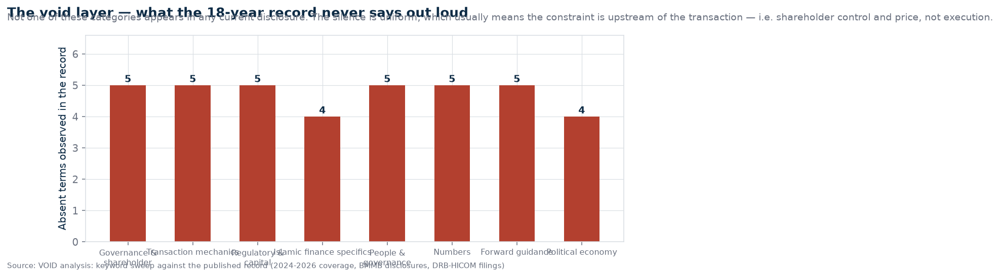
The negative space is unusually clean. Across the 2024-2026 public record — DRB-HICOM filings, Bank Muamalat
disclosures, MBSB results, rating-agency releases, exchange announcements and the press corpus — none of the
following categories appears: VOID
Absent category
Why its absence is informative
Transaction mechanics
No valuation, no share-swap ratio, no due-diligence stage, no adviser mandate, no binding agreement language. Every serious Malaysian bank deal of the last decade produced at least one of these in the public record. Their total absence is the strongest single signal that no live negotiation is in documentation.
Regulatory movement in 2026
No BNM approval notice, no extension application, no waiver. In 2015 and 2017 these were public. Silence here is not discretion; it is absence.
Capital instruments for a deal
No rights issue, no sukuk framed for acquisition funding, no capital injection proposal. A RM6bn-plus two-sided transaction cannot happen without this, and it would be visible years early.
Islamic-finance specifics
No Shariah-structure commentary, no sukuk/takaful integration discussion, no waqf or zakat impact analysis — precisely the material a genuine Islamic mega-bank proposal would foreground for political and religious legitimacy.
People
No succession, board-renewal or key-person disclosure tied to a transaction. Bank Muamalat's CEO transition (Khairul Kamarudin, appointed November 2024, succeeding a retiring incumbent) reads as ordinary renewal, not deal preparation.
Numbers that a deal requires
No goodwill estimate, no synergy target, no post-merger cost-to-income ratio, no integration cost, no branch-overlap count. Without these, no deal is being modelled publicly.
Forward guidance on structure
No IPO timetable, no listing venue, no dividend policy, no target ROE for a combined entity, no capital plan. The 2024 IPO exploration produced the flat statement that listing "remains a possibility... not currently a definite plan" — and nothing since.
Political-economy language
No federal-state negotiation framing (relevant given Sarawak), no GLC mandate language, no Bumiputera-equity-policy argument. Historically, Malaysian bank consolidation announcements in this segment have always carried one of these.
Predictive void. Each of these categories is a future disclosure event. If a real negotiation
begins, the sequence is predictable: (1) BNM approval to negotiate, (2) adviser mandates, (3) an extension
application if it drags, (4) capital structure disclosure, (5) Bursa announcements on material terms. Watching
for step 1 is sufficient. Everything else is commentary. INT
§9 Market and Regulatory Frame
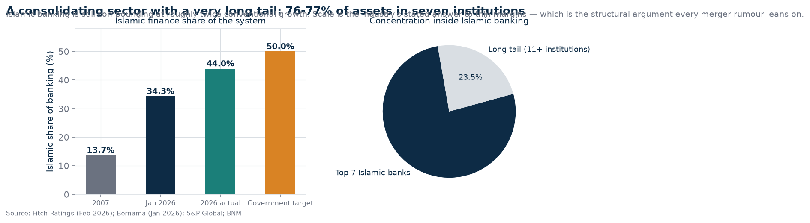
The structural case for consolidation
Islamic banking assets reached RM1.3tn in January 2026, 34.3% of total banking assets, from 13.7% in 2007. OBS
Shariah financing is about 44% of system loans, closing on the 50% national target. OBS
Islamic banking assets exceeded USD312bn in 2025, one of the largest Islamic markets globally. OBS
The six largest Islamic banks (all subsidiaries of the big local banks) plus Bank Islam account for 76-77% of Islamic system assets and financing. OBS
There are 16 Islamic banks, one international Islamic bank and two Islamic DFIs — a crowded field for a market this concentrated at the top. OBS
The regulatory frame that actually binds
Bank Muamalat operates under the Islamic Financial Services Act 2013; DRB-HICOM's holding is constrained by a condition of the 2008 approval, not by a standing statutory cap on institutions. OBS
Individual shareholding is capped at 10% under the FSA with grandfathering for pre-2013 holdings — relevant to how any new controlling individual would be treated. OBS
BNM's mega Islamic bank licence framework requires USD1bn issued and paid-up capital, and permits up to 100% foreign equity — the regulator's stated preference for well-capitalised standalone Islamic institutions. OBS
Precedent for completion exists: the Ministry of Finance and BNM cleared MBSB's MIDF acquisition (2023), showing the pipeline works when the seller is a motivated GLC. OBS
§10 Falsification — What Would Have To Be True
This section exists to make the brief attackable. Each row states a condition that, if false, invalidates the
conclusion.
Claim in this brief
Disconfirming evidence to watch for
No live negotiation exists in the public record as of 15 Sep 2026
Any Bursa announcement, BNM approval notice, or credible 2026 report of revived talks. If this appears, the void layer of this brief is superseded immediately and §8 should be treated as stale.
The binding constraint is price and control, not regulation
A transaction with a price at or below 1x book AND a control structure both parties accept. That would show the constraint was softer than the ten-year record implies.
Bank Muamalat's asset-quality deterioration is event-driven, not structural
Two more quarters of rising GIF, or the AKPK cohort converting to losses at scale. That would reclassify the book and materially cut any achievable price.
DRB-HICOM will not accept deconsolidation below control
A DRB-HICOM announcement accepting a minority position, or a deconsolidation that management frames as value-accretive. Watch the group's ROE and net-profit narrative for preparation.
MBSB is a weakened buyer in 2026
A capital raise, a guidance upgrade, or an ROE recovery above 5%. Any of these restores its capacity to pay a seller's price.
Sarawak has moved on from Islamic banking
Another approach to a domestic Islamic institution, or a state-level banking mandate published in Sarawak's budget cycle.
10.1 Monitoring list — where a real signal would appear first
Bursa Malaysia announcements — DRB-HICOM (DRBHCOM) and MBSB. Primary, binary, authoritative. OBS
Bank Negara Malaysia — approval notices, Financial Sector Participants Directory changes. OBS
Rating agencies — MARC and RAM action commentaries. Their language shifts ("MARCWatch", "rating outlook revision", "potential merger") before public announcements. OBS
Khazanah's portfolio disclosures — the 30% stake is the cleanest signal of intent. OBS
Sarawak state budget and SFS filings — state-level acquisition mandates. OBS
Bank Muamalat's Pillar 3 and quarterly reports — capital ratios, CASA, funding concentration. Watch for instruments sized for something other than organic growth. OBS
Kill criterion. If DRB-HICOM reports two consecutive quarters with no corporate-action language
and Bank Muamalat returns to above-8% financing growth with GIF back under 1.2%, this brief's core thesis
(structural deadlock) remains intact but its urgency expires: the asset becomes more valuable, the ask rises
further, and the probability of any transaction in the following twelve months should be cut toward the low
single digits. INT
§11 The Counter-Narrative — The Case For a Deal Happening
Mandatory falsification of my own conclusion. Here is what a competent bull would argue, and what it is worth.
"Regulators eventually win." An 18-year-old unmet condition on a licensed institution is an
embarrassment nobody wants to own. BNM has extended repeatedly; it need not do so forever. INTAssessment: real, but a slow-moving pressure, not a trigger.
"Khazanah wants out." A sovereign fund sitting on a non-core 30% of a family-controlled bank
has every reason to push for a resolution — and it has said as much since 2015-16. OBSAssessment: the strongest bull point, and the one that also unblocks under the rarely-discussed
partial-sell-down route (S3), which I rank at 15% — higher than most commentary would.
"Scale is now existential in Islamic banking." With 76-77% of Islamic assets in seven
institutions and margin compression across the board (MBSB's NIM guidance cut, Bank Muamalat's financing growth
collapse), the tail must consolidate or shrink. OBSAssessment: correct at sector level; does not tell you which merger or when.
"The buyer has an incentive to overpay for a licence and a retail-alternative book."
Islamic banking licences are not freely issued at scale, and Bank Muamalat's Ar Rahnu, personal financing and
home financing mix is genuinely complementary to MBSB's. INTAssessment: the only argument that could break the price deadlock — and it requires the buyer to
have capital, which in 2026 it does not visibly have.
"Bank Muamalat is investing like a standalone winner, which makes it sellable." The Atlas
digital banking platform, branch expansion and product launches show a bank building for growth, not winding
down. A growing asset attracts a better price than a stagnant one. OBSAssessment: true, and underweighted in most rumour commentary — but it cuts both ways: it also
makes walking away easier for the seller.
§12 Conclusions
The rumour is structurally founded and currently unsubstantiated. A real regulatory
obligation exists; no 2026 negotiation is documented. Treat the chatter as a standing condition, not news.
VOID
One partner produces the headline; the headline is worth 3%. MBSB Bank plus Bank Muamalat
edges Bank Islam by RM3.4bn of assets. Every other combination either fails to reach first place or is not
acquirable. DER
The economic logic is funding, not size. A 12% retail funding base and 47% top-20 depositor
concentration is the real vulnerability; only a retail-deposit-rich partner fixes it. OBS
The seller cannot sell without paying for it. Bank Muamalat is 32.1% of DRB-HICOM's pre-tax
profit and worth more than DRB-HICOM's entire market capitalisation. DER
Both candidate partners are impaired right now — MBSB at 1.5% quarterly ROE and cutting
guidance; Bank Muamalat with a 1.52% impairment ratio and 4.6% financing growth. OBS
Foreign bidders have left the building. KFH is winding down; Al Rajhi is organic-only. The
available buyer set is domestic, which makes the deal political before it is financial. OBS
The IPO route is the elegant answer and the market is the wrong one. It satisfies the
pare-down without conceding control; Malaysian banking multiples of 0.5–1.3x book make it unattractive to a
seller anchored at 1.2x. INT
The most probable deal in this space is not a merger at all. A partial sell-down that
keeps DRB-HICOM in control and gives Khazanah its exit is the only structure that satisfies the two hardest
constraints simultaneously. It is assigned 15% — higher than the merger, and it is the scenario almost nobody
is discussing. INT
Watch filings, not sentiment. BNM approval to negotiate is the only unambiguous signal. If
that appears, this brief's void layer inverts within one news cycle. OBS
Base case: nothing happens, and the condition keeps ageing. 50% probability, with the
twelve-month checkpoints in §10.1 as the tripwires. INT
§13 What This Brief Does Not Know
Gap
Impact on conclusions
No BNM public document restating the 40% pare-down condition was located
Moderate. The condition is reported consistently across a decade of credible journalism, but this brief cannot cite the instrument itself. If the condition is looser than reported, S1 (status quo) becomes even more likely.
MBSB Bank's standalone total assets (≈RM64.4bn) rests on a secondary aggregator; the verified figure is MBSB Group at RM67.96bn (1Q26) and MBSB Bank at RM58.1bn (2Q25, ≈90% of group assets)
Low. All variants of the combination arithmetic cross the Bank Islam threshold or come within a few billion. The conclusion ("first place by approximately 3%") is robust to a ±RM6bn error.
No disclosure of Bank Muamalat's 1H26 total assets or 1H26 interim balance sheet
Low. The RM45.7bn end-2025 figure is rating-agency verified; the 1H26 PBT is from DRB-HICOM's results commentary.
No verified figure for KFH Malaysia's remaining assets during wind-down
Negligible. KFH is a seller, not a partner, and its exit is already priced into the landscape.
Private shareholder positions — what DRB-HICOM, Khazanah or EPF would actually accept today
Material but unknowable. The brief substitutes the observable outcome pattern over eighteen years for private information, which is the honest method and also the reason probabilities are stated as intervals of judgement rather than as estimates with false precision.
Whether the 2025 AKPK-linked fraud cohort is fully provisioned
Moderate. Affects any achievable price and the timing of a buyer's willingness to underwrite at book.
Appendix A — Source ledger
Bank Muamalat Malaysia Bhd — Pillar 3 Disclosures, half year ended 30 June 2026; shareholders and investor-relations pages; press releases (Aug 2026).
MARC Ratings — "MARC Ratings affirms Bank Muamalat's ratings" (18 Aug 2026); MARCWatch note on KFH Malaysia (6 Sep 2026); MARC on MBSB (stable outlook).
RAM Ratings — Bank Muamalat A2/Stable/P1 affirmation.
The Edge Malaysia — "Al Rajhi Malaysia chooses growth over exit as peers retreat" (15 Sep 2026); "Syed Mokhtar's MMC tells bankers to drop port listing" (11 Sep 2026); "MBSB cuts guidance after 2Q" (27 Aug 2026); "Bank Islam's 2Q profit rises 10%" (26 Aug 2026); "Tax swing weighs on DRB-Hicom's 2Q" (18 Aug 2026); "Sarawak said to be on the prowl for a bank to merge with Affin Bank" (Edge Weekly, Apr 2025); "EPF and DRB-Hicom jostle for control in Islamic bank merger" (2015); "End of the road for MBSB-Bank Muamalat merger?" (2016); "Bank Muamalat looking at listing" (Feb 2024); "Bank Muamalat says no definite plans for listing" (Jul 2024); "DRB-Hicom confirms exploring stake sale in Bank Muamalat" (2010); "#Highlight: Affin not buying Bank Muamalat"; "Is Syed Mokhtar consolidating his interests in DRB-HICOM?" (2022).
The Star — "Sound prospects for DRB-Hicom" (26 Aug 2026); "MBSB 2Q net profit at RM44.2mil" (27-28 Aug 2026); "Affin Bank outlook turns more cautious" (18 Aug 2026); "Sarawak-led initiatives to foster Affin Bank growth" (20 May 2026); "Islamic finance poised for continued growth" (6 Jul 2026); "Maybank Islamic named Global Islamic Bank of the Year 2026" (18 Jun 2026).
Fitch Ratings — "Malaysian Islamic Banks to Continue Outpacing Conventional Banks' Growth" (3 Feb 2026).
Bernama — Islamic banking assets RM1.3tn / 34.3% share (Jan 2026); Bank Rakyat total assets RM131.0bn (FY2025).
Free Malaysia Today — "Sarawak reportedly eyeing another bank for merger with Affin" (16 Apr 2025).
Bank Negara Malaysia — new Islamic banking licence issuance terms (USD1bn issued and paid-up capital; up to 100% foreign equity); Financial Sector Participants Directory; monthly statistical highlights (Jan 2026).
Affin Bank Bhd / Affin Islamic Bank Bhd — quarterly reports 1Q26 and 2Q26; 50th AGM presentation.
MBSB Berhad / MBSB Bank Bhd — interim financial statements 2Q25-2Q26; Integrated Annual Report 2025; news releases.
DRB-HICOM Bhd — 2QFY2026 interim report and media releases; Corporate Governance Report 2025.
Bank Islam Malaysia Bhd — 2QFY2026 results (26 Aug 2026); Integrated Annual Report 2025.
Other: Forbes profile (Syed Mokhtar AlBukhary, Sep 2026); Wikipedia (biographical context only); Christopher & Lee Ong (banking landscape counts, March 2026); Kenanga, Public Invest and HLIB research notes (2026); Asian Banking & Finance; Reuters; Malaysiakini; The Vibes; Business Today; Sarawak Tribune.
Appendix B — Provenance
Charts rendered from a single structured dataset; dataset hash and PDF hash recorded in
SHA256SUMS.txt alongside this document. The dataset, chart scripts and source ledger are retained
in the forge workspace for replication. Fetch timestamp: 15 September 2026 (UTC). All market figures are as
reported at their source dates and are not adjusted for subsequent events.
Constitutional frame. F2 (truth — every claim sourced or derived), F7 (humility — insider bias
and gaps disclosed), F9 (no intent attribution — pattern recognition only), F11 (auditability — full source
ledger and hash), F13 (sovereign product — an intelligence artifact, not a policy directive).
This document offers no investment advice and no valuation recommendation. It is a witness artifact:
it describes what is on the record, what that record implies, what it makes likely, and what it never says.